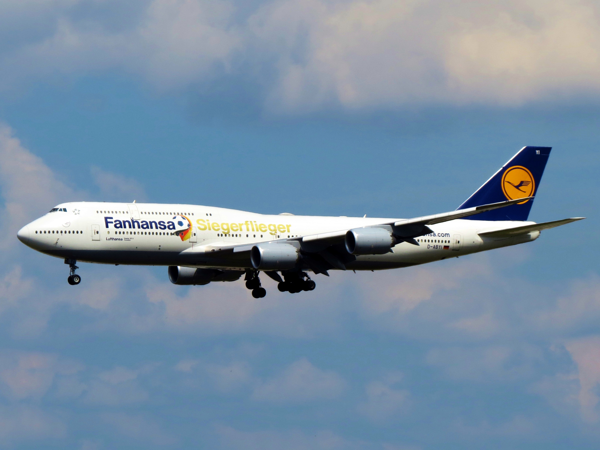

案例发生了什么

把航班改名为 Fanhansa，承接德国球迷飞往世界杯的集体身份。
飞机涂装/命名、PR、社媒、旅客体验。
MARKETING KNOWLEDGE ROUTER · 营销知识路由器
营销启发卡
把历届经典的记忆点、商业结构和迁移方法放在同一层阅读。 卡片底部按主题连接全站相关案例、经典方法与深度文章。
核心动作
国家队支持、旅行、幽默命名；Fanhansa。
传播与商业机制
航空公司用一个轻巧命名动作连接国家队情绪和旅行服务；飞机涂装/命名、PR、社媒、旅客体验。
可复用的方法
轻量创意也能成为品牌参与大事件的记忆点。
适用条件、风险与证据
- 强依赖本国球队成绩和民族情绪。
- 强依赖本国球队成绩和民族情绪。 后续复盘还应补齐发布主体、时间线、真实执行图、媒介范围和结果口径；没有这些证据时，不把行业评价或赛事总热度写成品牌增量。
资料与来源
官方资料与原始来源
市场 / 权益
德国/全球
非官方/国家队情绪
创意打法
国家队助威型
- 原表代表素材 / 来源https://en.wikipedia.org/wiki/2014_FIFA_World_Cup_marketing
- Kiefer. · 2014-07-15本页真实案例图片主源
来源按品牌/官方发布、官方账号留存、权威媒体、获奖案例库分层记录；品牌与奖项自报结果不视作独立审计。